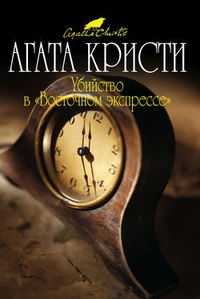
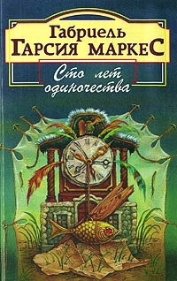
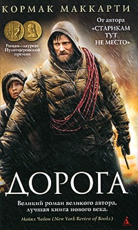

| Книга | Описание | Обложка |
|---|---|---|
| Агата Кристи "Убийство в "Восточном экспрессе"" | Агата Кристи уже десятки лет считается королевой классического детектива. Герой ее книги, Эркюль Пуаро, в последний момент попадает в вагон Трансибирского экспресса. Произошедшее в одну из ночей убийство заставляет его найти ответы на вопрос полиции: как могло произойти убийство, при наличие у всех подозреваемых железного алиби? А так же определить для себя, что важнее и правильнее в данной запутанной ситуации - правосудие правовой системы, или же правосудие человеческого долга и совести? Вопросы чести и морали, поднятые в этой книге, и трагичность человеческих судеб делает ее актуальной для прочтения и в наши дни. |
 |
| Габриэль Гарсия Маркес "Сто лет одиночества" | Одна из величайших книг XX века. Странная, поэтичная, причудливая история города Макондо, затерянного где-то в джунглях, – от сотворения до упадка. История рода Буэндиа – семьи, в которой чудеса столь повседневны, что на них даже не обращают внимания. Клан Буэндиа порождает святых и грешников, революционеров, героев и предателей, лихих авантюристов – и женщин, слишком прекрасных для обычной жизни. В нем кипят необычайные страсти – и происходят невероятные события. Однако эти невероятные события снова и снова становятся своеобразным «волшебным зеркалом», сквозь которое читателю является подлинная история Латинской Америки… |
 |
| Кормак Маккарти "Дорога" | Есть разные страхи, разные понятия о жизни и о добре в частности. Но, иногда наступает такой неожиданный момент, когда все это отступает и просто растворяется на заднем фоне, остается лишь огромнейшая Надежда с заглавной буквы и понятие, что нужно все время передвигаться далее и просто пытаться жить... Книга «Дорога» - другое название и не могло быть у такого пронизывающего и действительно эмоционального произведения Кормака Маккарти, в котором отец с сыном после катастрофы не могут понять куда перемещаться и, что самое первостепенное, для чего? Поистине, очень глубокий роман с нечто более серьезным смыслом, который, безусловно, оставит неизгладимое впечатление. |
 |